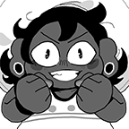

"STOP RECITING THE VANGUARDIAN ALPHABET!" Child yells.
Boniface (Bonnie for shot), one of the saviors of Vanguarde, pouts as they watch Siffrin and Isabeau, two other saviors of Vanguarde, recite the Vanguardian alphabet starting from the letter I.
"I used my ESP for this![...] I even TOLD these two to NOT recite the CRABBING alphabet!!!"
When asked why they're so upset, Bonnie yelled "I used my ESP for this! I made sure nobody would interrupt! I didn't interrupt! I even TOLD these two to NOT recite the CRABBING alphabet!!! And what do they do!?" Bonnie then pouted. "I bet if someone 'clicked' on them, whatever that means, then they'd suddenly start reciting it again like the CRABS they are!"
Bonnie then mumbled something about "This better not be what I need to do because then we're stuck forever..." and then walked over to speak to the Head Housemaiden. More in 10!
Fangirl recently noticed to have color-changing eyes, says it's "not that big of a deal".
"I mean, it's normal where I'm from![...] It's like if Viola was from a world where everyone spoke like that- SHE IS!?"
Frankie, resident fanfiction writer of New Wirral, who spends her free time either doing Ranger stuff, writing Blood Puncher fanfiction, or writing RPF about Cass' sex life, was recently discovered to not actually have pink eyes, but rather brown eyes that turn pink whenever she's excited.
When asked about this trait and why she didn't feel the need to show it off like she does anything magical, Frankie responded "I mean, it's normal where I'm from![...] It's like if Viola was from a world where everyone spoke like that- SHE IS!?"
Interview with a Fucked-Up Not-Frankie: The inside scoop of the internal lives of beings that have our faces but aren't us
Fucked-Up Not-Frankie (FUNF for short): [insert her battle dialogue here lol]